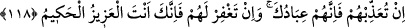

şâhit olur, küfür ve îmanla ilgili hallerini görürdüm.
“Fakat sen beni vefât ettirince” yani sen beni onların arasından çekip alınca ve beni
göğe kaldırınca “onları gözetleyen yalnız sen oldun.” Yani başkası değil; yanlız sen
oldun. Amellerini kontrol eden ve gözetleyen sensin. Onlardan emirlerine karşı
gelmekten korumayı arzu ettiklerini, peygamber göndermek ve kitap indirmek sûretiyle
doğru yola irşad ve tenbih ederek korudun. Onlardan dalalete düşenlerden dilediğini de
hor ve zelîl kıldın. Onlar da ileri-geri söyleyeceklerini söylediler.
“Sen her şeyi hakkıyla görensin.” Her şeye vâkıfsın, her şeyi murakâbe ve kontrol
edersin.
118. Eğer kendilerine azap edersen, şüphesiz onlar senin kullarındır. Eğer onları
bağışlarsan şüphesiz sen izzet ve hikmet sahibisin” dedi.
“Eğer kendilerine azap edersen, şüphesiz onlar senin kullarındır.” Sen kullarına
azap edebilirsin; Mâlik-i mutlakın kendi mülkünde dilediği gibi tasarrufta bulunmasına
kimse itiraz edemez. Bu ifade ile, Allah’tan başkasına kulluk ettikleri için onların azâbı
hak ettikleri tenbih edilmektedir.
“Eğer onları bağışlarsan, şüphesiz sen izzet ve hikmet sahibisin dedi.” Bunda
herhangi bir acziyet ve kınanacak durum söz konusu olamaz. Çünkü senin
mükâfâtlandırmaya da, cezâlandırmaya da gücün ve kudretin yeter. Sen ancak bir hikmet
gereği ve en doğrusu olduğu için mükâfâtlandırır ya da cezâlandırırsın. Her günahkarı
bağışlamak güzeldir. Eğer azâb edersen bu senin adaletindendir, eğer bağışlıyacak
olursan bu da fazl u kereminden, ihsan ve cömertliğindendir.
“Bir müşrikin, bağışlanması kesinlikle gerçekleşmeyecek, azâba uğraması ise mutlaka
gerçekleşecek bir husus iken âyette azâb ve mağfiret kavramlarının olup olmama
açısından sanki eşdeğermiş, ikisinin de vuku bulması aynı oranda câiz bir ihtimalmiş
gibi ifade edilmesinin mânâsı nedir?” dersen, cevap olarak derim ki:
Müşrikin bağışlanmasının kesinlikle imkansız oluşu, aklen câiz (mümkün) oluşuna ters
düşmez.
Denilmiştir ki bu iki farklı ihtimal, farklı iki grup için zikredilmiştir. Bu durumda
mânâ “eğer onlara azap edersen” yani onlardan kâfir olanlara azab edersen; “eğer
onları bağışlarsan” yani onlardan îman edenleri bağışlarsan demek olur.
Rivayet edildiğine göre bu âyet nâzil olunca Rasûlullah (s.a.) gecesini bu âyetle ihya
etti. Kıyamda, kuûdda ve secdede onu okudu. Sonra “Ümmetim, ümmetim, yâ Rabb!”
diye yalvardı ve ağladı. Bunun üzerine Cebrail (a.s.) gelerek dedi ki: “Allah sana selam
söylüyor ve sana “Biz mutlaka seni ümmetin hususunda râzı edeceğiz ve seni
üzmeyeceğiz buyuruyor.”[76]